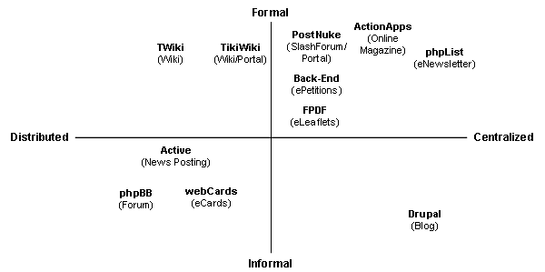

Top 10 Open Source Tools for eActivism
on
Note: This article was written a few years back now and the web software options have changed considerably. Many people are now searching for information about evaluations of wiki's. Dan Bashaw wrote an interesting follow-up to this article recently. I generally suggest either using MediaWiki if that's all a client wants since Wikipedia has made the norm, or doing something more customized that we would set up with Drupal. If you need help choosing what type of application you need or support in setting it up, please feel to contact us.
by Dan Bashaw & Mike Gifford
People have been trying to use the web to create change from its conception. Along with the rest of the Internet community, activist focus has moved away from producing static content to building on-line communities. There are a number of Application Service Providers (ASPs) providing external eActivist applications that can be integrated with the look and feel of an organization's existing web site, but we will not be evaluating ASPs in this article. Instead, we want to discuss eActivist applications that can be run from the same server as the organization's existing website.* Furthermore, we will be looking at Free Software applications that can be downloaded, modified, and distributed by the users of the software.
Broadly speaking, the eActivist applications described below can be categorized as either informational, aiding in efficiently spreading your message, or actionable, allowing your users to act on their information and understanding of issues. Although the distinction can be useful in deciding which tool to use, many applications have now evolved to include elements of both.
The first five applications examined are primarily informational: four are tools for building web sites, and have considerable overlap in core features, though each has different strengths, weaknesses, and appropriate uses. The fifth focuses on eNewsletters.
We have provided just a brief sketch of the functionality of each application. Describing the type of interaction they allow and with whom. Outlining their key strengths and weaknesses as we see them. Providing some activists tips for their use and providing an example. We feature one example, but have also listed alternatives which are worth considering.
1. ActionApps (On-line Magazine/Content Sharing) - http://www.apc.org/actionapps/
Interaction: Minimal interaction between visitors & content authors
Strength: Publishing Control & Extensive Cross Site/Server Publishing Permissions. A good publishing tool.
Weaknesses: Often too big & cumbersome for organizations that don't need this type of control.
Activist Tips: Some organizations may want to share content between other related organizations. Set up within the Association of Progressive Communications, this model made a lot of sense to member organizations which already had close associations. Some coalitions are using this type of permission based content sharing to maintain an issue related site which is fed by a number of member organizations.
Example: http://www.rabble.ca/
Alternatives: slashForums, Blogs, Back-End and Active (below) can all provide content non-interactive content publishing.
2. PostNuke (Slash Forums/Portals) - http://www.postnuke.com/
Interaction: Plenty of opportunities for users to submit stories, links, & comments for publishing on the site. Dialog is usually shaped through a response to an article posted by the editorial team.
Strengths: Lots of add on modules, often installed with a web hosts default control panel.
Weaknesses: Many slash sites are hard to modify to look like anything but a slash site. Content becomes stale very quickly and daily posts are almost required.
Activist Tips: Selecting the right modules for your site is the key to using any of the 'slash' content management systems. Pick the features (i.e. polls, surveys, galleries, calendars, forums, etc.) that your site needs, and keep it simple by not offering those that don't forward your goals. It is also important to watch the activity in different modules to see which ones are being used.
In terms of keeping your site fresh, the authoring environment is key to creating a site that is easily maintained. Look for authoring tools that will allow your authors to style their own text easily and quickly. A system that is too obscure or complex will not be used.
Example: http://www.canadiandemocraticmovement.ca/
Alternatives: The listings in the lefthand sidebar at Open Source CMS (http://www.opensourcecms.com/) link to demos of many portal systems, including postNuke (http://www.postnuke.com/) , and Plone (http://www.plone.org/).
3. Drupal (Blogs) - http://drupal.org/
Interaction: Lots of user interaction & interaction between related Drupal sites. Extensive use of RSS feed publishing & aggregating.
Strengths: Informal, newsy, often personal. There are a lot of folks who are bloggers or participate in blog culture.
Weaknesses: Like other news focused sites, if it isn't updated regularly, it becomes stale very quickly.
Activist Tips: For activist organizations, the blog format can be a great way to humanize messages on an ongoing topic or a developing campaign. Because blog=personal to the reader, campaign blogs have a 'note from a friend' feel to them -- much more personal than the same information presented in a web news or magazine framework. When using blogs, consider having a single 'voice' or a small group of voices do all posts, to reinforce the personal flavour of the blog.
As well consider displaying the blog's 'RSS feed' (Headline, annotation and link of each blog entry) into the sidebar of your organizational web site and your email campaigns, to extend this personal voice further.
Example: http://www.blogforamerica.com/ (likely not using drupal)
Alternatives: Also consider Geeklog (http://www.geeklog.net/index.php), and the various blogs listed under the 'Blogs' heading in the lefthand sidebar at Open Source CMS (http://www.opensourcecms.com/).
4. Active (News Posting) - http://www.active.org.au/doc/
Interaction: Terrific news contributions.
Strengths: It is a great way to gather news from an event or a community. One of the best tools for posting/displaying multi-media.
Weaknesses: Like other news sites, they can grow stale quickly. As well, due to the open publishing nature of Active, editorial control over the Newswire is weak. It is almost impossible to totally control the content of the site.
Activist Tips: Indymedia sites running Active first came into prominence during the Seattle anti-globalization protests in 1999, where the ability to post news rapidly from the streets to the web was critical to getting the story out. Active is ideal for an action-oriented situation, where information is posted in realtime and contextualized on-the-fly by volunteer editors.
However -- it is not as good an ongoing publishing system choice for an activist organization with a controlled editorial workflow. Because Active allows any member of the public to post directly to an unmoderated Newswire, it can leave an organization open to potential legal and 'staying on message' problems if the Newswire is not closely monitored. If tighter editorial and user control are important to your organization ActiveApps, postNuke and Drupal (all noted above) are alternatives.
Example: http://www.indymedia.org/ (The umbrella site for over 80 Indymedia sites) and http://portland.indymedia.org/ (A typical Active site showing the Newswire in the righthand sidebar).
Alternatives: Variations on the PHP-based Active (http://www.active.org.au/doc/) include MiR (http://docs.indymedia.org/view/Devel/MiR), a Java implemetation, and IMCSlash (http://docs.indymedia.org/view/Devel/ImcSlash), written in Perl.
5. phpList (eNewsletters) - http://www.phplist.com/
Interaction: It's entirely one way, but it gives the user the opportunity to indicate what they want to subscribe to. It also provides an opportunity to gather other information about your site's visitors.
Strengths: It is easy to set up and provides an easy way to encourage other participants to come back to your site. Users can provide their interests & geographic location to allow users to get more targeted eNewsletters.
Weaknesses: There are a lot of options and it may take a bit of time to learn how to use it, particularly if you are only sending out eNewsletters every couple of months.
Tips: Plan to write a eNewsletter once every month or two, more if your campaign is very active. Make sure that you write the eNewsletter to be short and easy to scan. Provide a title, short abstract an a link to an article on your website with the full story. Text is generally preferred by users and easier to be forwarded on in email & included in other forums. Always ask your subscribers to forward this message on to their friends. When referring to a URL, make sure to include the "http://"
Alternatives: Mailman (http://www.list.org/), Sympa (http://www.sympa.org/) and other mailing list managers also allow one-way 'broadcast' lists. Also consider LetterIT (http://otterware.net/index.php?id=scripte&sid=letteritm)
The remaining five eActivist applications examined below are broadly 'actionables' involving peer-to-peer (Forums, eCards, Wikis), peer-to-Pol (ePetitions), and peer-to-pole (eLeaflets/ePosters) communications.
6. phpBB (Forums) - http://www.phpBB.com/
Interaction: It's all interaction. Discussions take place in forums and users contribute all of the content.
Strengths: It's a commonly understood format so it is easy for new people to start participating. The ability to have restricted forums is also useful for some organizations.
Weaknesses: It may need to be moderated, or at least monitored so that you are familiar with what is being posted. Also, it may take some time to get people using/posting to the forum.
Activist Tips: Bulletin boards or online forums predate the Internet and are one of the most understood forms of web dialogs, and training time for most is minimal. It is a good environment for brainstorming or allowing folks to vent their concerns. Many forums allow for moderation so that inappropriate posts can be adjusted, but this takes time as does building an active, constructive climate for exchanging ideas.
If a forum is little-used, consider replacing it with either a mailing list like Mailman (http://www.list.org/), or a simpler bulletin board system like wwwBoard (http://www.scriptarchive.com/wwwboard.html) which shows all posts in a 'tree view' on a single page. Both of these alternatives will encourage more participation in low-traffic situations.
Example: http://www.gwbush.com/forum/ (Not using phpBB)
Alternatives: Also consider the forums listed under the 'Forums' heading in the lefthand sidebar at Open Source CMS (http://www.opensourcecms.com/).
7. WebCards (eCards/email2friends) - http://webcards.sourceforge.net/
Interaction: Limited opportunity to send a message to a friend. Essentially an advanced email2friend form.
Strengths: By using innovative images you can encourage folks to spread the word more about your campaign. Like blogs, people that use webcards will use them a lot and come back when they can.
Weaknesses: When was the last time you were really influenced by a postcard?
Activist Tips: eCards are a 'semi-viral' marketing technique -- they cannot escape and circulate independently of your organization, as an email can, so you maintain control over the organizational image projected by your eCards.
-
Humour will often work well with eCards, as more users will be likely to pass along a humourous message than a less evocative one.
-
In order to keep your activist message clear for for the recipient of the eCard, you can include your headline and other key text directly into the eCard image.
Example: http://www.savebiogems.org/postcard.asp (not using webcards)
Alternatives: Website Gizmos http://www.bitesizeinc.net/index.php/gizmos.html, Send Card http://www.sendcard.org/ or see http://www.hotscripts.com/PHP/Scripts_and_Programs/Postcards/index.html
8. TWiki (Wiki/Group Documentation) - http://www.twiki.org/
Interaction: Total, but focused on creating more static documentation by the community
Strengths: It's a great web based collaboration platform. The ability to create common documents & review changes makes this application quite powerful for community groups.
Weaknesses: Wiki markup isn't consistent, it takes a bit of training for folks to get used to, editorial rights can be abused.
Activist Tips: Wiki webs are great tools for collaborative writing when your goal is to ultimately have a static or slowly-evolving document for internal use or public display: policy and procedures, grant proposals, reports can all be built effectively in a Wiki, with each contributor working in their own time on the single live document. As Wikis support roll-back to previous versions of pages, editorial control can be maintained while allowing freedom to each contributor.
Wikis can also serve as a shared brainstorming and notebook tool for activist groups -- though the fact that wiki information is not 'pushed' to users desktops requires that users building a project must intentionally visit and contribute to the Wiki. Twiki, which supports RSS feeds, can push notification of page changes to users, encouraging participation.
New users will need to be given a brief introduction to using Wiki, to give them familiarity with adding pages, editing content, and basic text styling, to ensure that they are comfortable in the Wiki environment.
As an example of how far groups can go in using Wiki as a writing tool, look at the multi-lingual Wikipedia (http://en.wikipedia.org).
Example: http://thor.acedragon.co.uk/biconwiki/ (not using twiki)
Alternatives: Also consider the forums listed under the 'Wiki' heading in the lefthand sidebar at Open Source CMS (http://www.opensourcecms.com/).
9. Back-End (eActions/ePetitions) - http://www.back-end.org/
Interaction: It's a focused level of interaction, but asks permission to contact folks in the future.
Strengths: People are comfortable giving a minor level of support to an organizations cause through Petitions & eActions.
Weaknesses: They are most useful if there are multiple campaigns or opportunities for people to start becoming more educated & aware. The flexibility of Back-End makes it more time consuming to customize.
Activist Tips: Keep the text of the ePetition or eAction short & easy to read. Make sure to have links to other information about the campaign on your site that people can read up on if they are interested. Make sure that you ask for permission from your supporters to contact them. People like seeing other people's comments, so if possible display the and the number of signatories.
Example: http://www.fairvotecanada.org/petition.php/
Alternatives: simpetition PostNuke module http://sourceforge.net/projects/simpetition/
10. FPDF (eLeaflets/ePosters) (Dynamic PDF/Graphic Generation) - http://www.fpdf.org/
Interaction: Simple off the web interaction. Allowing folks to download & print off posters, petitions, stickers and brochures customized online for their local campaigns.
Strengths: Good control over printed output, not dependent on the user's browser capabilities or Operating System.
Weaknesses: Introduces an additional server-side technology to accomplish PDF generation, which could have server performance impacts.
Activist Tips: If you want to be able to take your message to the streets and extend your brand to support local activists. Target specific communities on the fly with a customized pamphlet.
Example: http://www.afgha.com/?af=article&sid=37844
Alternatives: For some applications, CSS2 stylesheets (http://www.alistapart.com/articles/goingtoprint/) can be used to print simple dynamic content such as handbills. R&OS have produced a PDF class (http://www.ros.co.nz/pdf/) and there are a number of other graphic/pdf modification tools which are being developed.
Of course, in the rapidly evolving world of eActivism, any list of 10 anythings will have at least 11 members by the time it is completed! Emerging technologies that might be applied to eActivism include: RSS feeds, Friendster, cellphone texting, cam-phones, and audio blogs. Any of these may inspire or connect to Open Source applications. Older technologies such as chat and Internet telephony may also spring back onto the stage as activist solutions.
As well, the convergence of existing tools often leads to new solutions. We've selected TikiWiki, a tool that blends Wiki and Portal features, to round out our list of ten eActivist applications with its eleventh member.
11. TikiWiki - http://www.tikiwiki.org/
Interaction: TikiWiki is a content management system for writers. It supports wikiwiki web pages, blogs, CMS news article publishing, discussion forums, a directory of links, a calendar, RSS newsfeeds, user-designed databases for tracking contacts/events, and many other things as lots of people added code to the product over the last year.
Strengths: A 'swiss army knife' tool with a massive feature set!
Weaknesses: make sure to use the latest version of TikiWiki (1.1.1 or higher)for improved speed over earlier, slower builds. TikiWiki shares the relatively rigid 'portal' look of phpNuke and other slashForum applications.
Activist Tips: Use the collaborative capabilities of TikiWiki to work with a dispersed group of authors on keeping the site's formal content fresh. Use the built-in blogs, chat forums and image galleries to build community interaction. The combination plays to TikiWiki's strengths as a multifunction tool for building a site that is both informational and actionable.
Example: http://www.greens-in.org/
Alternatives: Other general content management frameworks, such as Geeklog (http://www.geeklog.net/index.php) and Typo3 (http://www.typo3.org) also take the fusion approach -- but none include the Wiki capabilities of TikiWiki.
Dan & Mike would like to thank David Newman his contribution to this section.
Sorting them out
There are a number of ways to compare eActivist applications as an aid in deciding which to consider for your organization.
We have plotted these tools on the Surman-o-graph, (an emerging standard in analyzing civil society communications) clustering them in the Formal/Centralized and Informal/Distributed quadrants:

In deciding which specific tool to apply to your eActivist problems, consider the following questions:
- Does the tool do what I need 'out-of-the-box', or will it need to be customized?
- Is the user interface simple for the people who will be working with the application?
- Is there reasonable documentation and support? Does the support forum handle newbie questions well?
- Does the tool use technologies and languages we are already familiar with?
- Is there an online demo my users can play around with to see if the tool 'feels right' to them?
- Is the tool's programming team actively developing and maintaining the tool?
- Is the tool one of the more popular ones in it's category?
A yes to a majority of these questions is a sign that you've may have the right application for your eActivist job.
There are a lot of Open Source tools out there which you can employ for your campaigns. We have tried to list some of the ones which we feel are the most useful in the fall of 2003. Like the Internet as a whole, Open Source projects tend to evolve quickly and new initiatives are popping up all of the time. The challenge for anyone putting together an activist web site will be in blending these and other tools into a seamless user interface. Customizing and adapting any software to meet your needs can be time consuming, but often the development communities behind these Open Source projects can help point you in the right direction. Most Open Source projects also have web developers who can be hired to modify the code that they have developed. Any customized code can be brought back into the core of the project so that it can benefit the whole community.
Bios
Dan Bashaw - dbashaw@pantalk.ca
Dan works as a web developer for TM Newmedia, a Victoria BC eLearning and web development company, is an activist with the Victoria Independent Media Center.
Mike Gifford - mike@openconcept.ca / http://www.openconcept.ca
Mike is the president of OpenConcept Consulting, Open Source Web Applications for Social Change. OpenConcept is the lead developer of Back-End.org CMS.
- Many of these applications will run on both proprietary & non-proprietary Operating Systems, however, you will have to check with your web host to determine if you have the software which is required.
Share this article


About The Author

Mike Gifford is the founder of OpenConcept Consulting Inc, which he started in 1999. Since then, he has been particularly active in developing and extending open source content management systems to allow people to get closer to their content. Before starting OpenConcept, Mike had worked for a number of national NGOs including Oxfam Canada and Friends of the Earth.